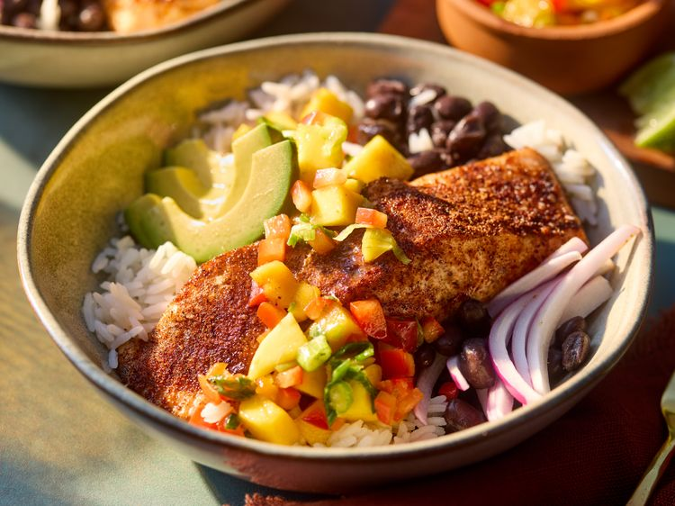

Home
BBQ Salmon Bowls

🥗 Description
A vibrant and flavorful bowl featuring smoky-spiced salmon roasted to tender perfection, paired with jasmine rice, black beans, and a bright mango salsa. Topped with creamy avocado and crisp red onion, it's a balanced one-bowl meal that's both nutritious and easy to make.
Ingredients
- 4 x 6oz salmon fillets
- 3 tbsp olive oil, divided
- 1 tbsp brown sugar
- 2 tsp chili powder
- 1 tsp smoked paprika
- ½ tsp onion powder
- ½ tsp ground cumin
- ¾ tsp kosher salt, divided
- 1 medium ripe mango, peeled, seeded, chopped
- ¾ cup chopped red bell pepper
- ¼ cup thinly sliced green onions
- ½ tsp lime zest
- 2 tbsp lime juice
- 1 habanero or serrano chile, seeded and finely chopped
- 1 tbsp chopped fresh basil
- 2 tsp honey
- 3 cups hot cooked jasmine rice
- 1 (15 oz) can black beans, rinsed and drained
- 1 avocado, peeled, seeded, and sliced
- ¾ cup thinly sliced red onion (or pickled onion)
Steps
- Preheat the oven to 230°C (450°F). Line a rimmed baking sheet with foil and coat lightly with non-stick spray.
- In a bowl, combine mango, red bell pepper, green onion, lime zest and juice, 1 tbsp olive oil, chile, basil, honey, and ¼ tsp salt. Stir to coat evenly.
- Combine brown sugar, chili powder, smoked paprika, onion powder, cumin, and remaining ½ tsp salt in a small bowl.
- Place salmon fillets on the prepared sheet; brush with remaining 2 tbsp olive oil and rub with the BBQ spice mix until coated.
- Roast in the oven until the salmon flakes easily with a fork, about 4-6 minutes per ½-inch thickness.
- Divide jasmine rice and black beans between four bowls. Top each with a salmon fillet, a portion of mango salsa, sliced avocado, and red onion. Serve immediately and enjoy!